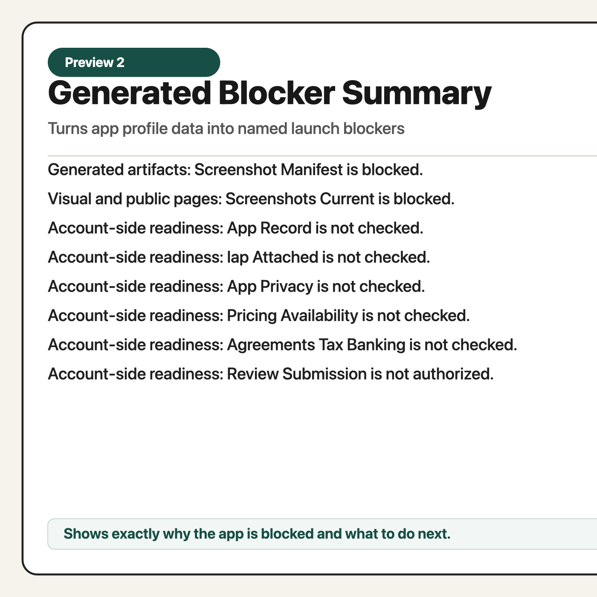

Launch checklists
Review local code, generated artifacts, screenshots, public pages, StoreKit, and account-side readiness before submission.
For indie iOS developers
A Markdown checklist pack plus offline generator that turns a simple app profile into a release-readiness packet, blocker summary, support page draft, and privacy page draft.

Review local code, generated artifacts, screenshots, public pages, StoreKit, and account-side readiness before submission.
Use a local JSON profile to generate a release-readiness review, blocker summary, support draft, and privacy draft.
Separate local readiness from App Store Connect, tax, banking, pricing, upload, and final review submission actions.
The pack performs no network requests, payment actions, App Store Connect mutations, signing, upload, or review submission. It helps you decide what is ready and what still needs account-owner verification.
node tools/generate-release-packet.js \
--profile examples/app-profile.json \
--out dist/focus-ledgerThis product does not submit your app, operate App Store Connect, provide legal or tax advice, or guarantee App Review approval.